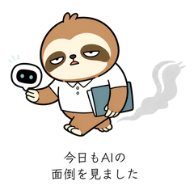
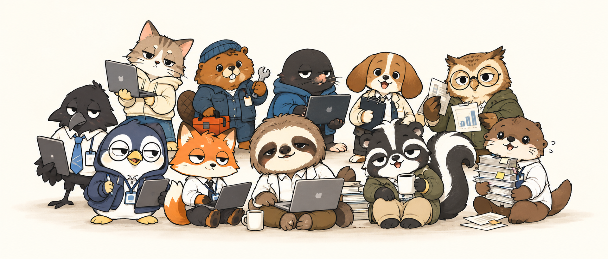

About Yuruaru Studio
共感できる、
使いやすいひとこと。
仕事仲間との雑談にも、友人との会話にも。疲れた日、うまくいかない日、ちょっとだけツッコミたい日に使える表現をつくっています。
First release
限界なまけ情シスの日常
問い合わせ対応に追われるナマケモノ情シス「なましす」。再起動、デバッグ、コンフリクト、今日も彼は疲弊に揉まれ、それでもなんとか生きている。
Vol.1を購入する ↗Second release
限界なまけ情シスの日常2
問い合わせ、会議、引き継ぎ、リリース、障害対応に追われるなましす。今日もなんとか対応中です。
Vol.2を購入する ↗Now available
販売中のスタンプ。
なましすから、コンサル、スカおじ、レイコン、カワイソ、略語好きのカラスまで。仕事の「あるある」をキャラクターごとに展開しています。
Coming next
次の「あるある」も準備中。
犬PM、データ担当、BE、SRE。まだまだ増える、弱くて可愛いITどうぶつたち。
Coming next
ゆるく、続いていきます。
Vol.1〜6を販売中です。気になるセリフや「あるある」があれば、ぜひ教えてください。